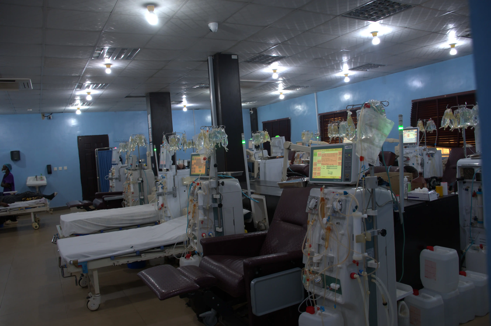
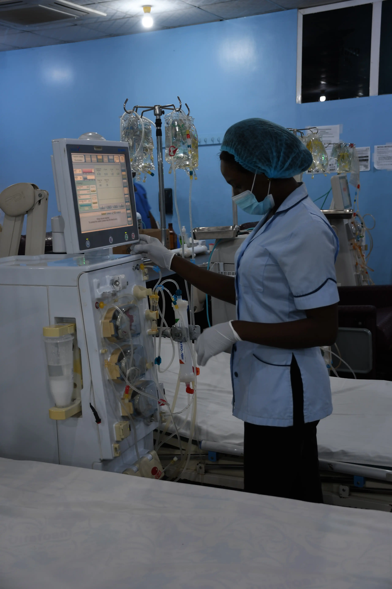
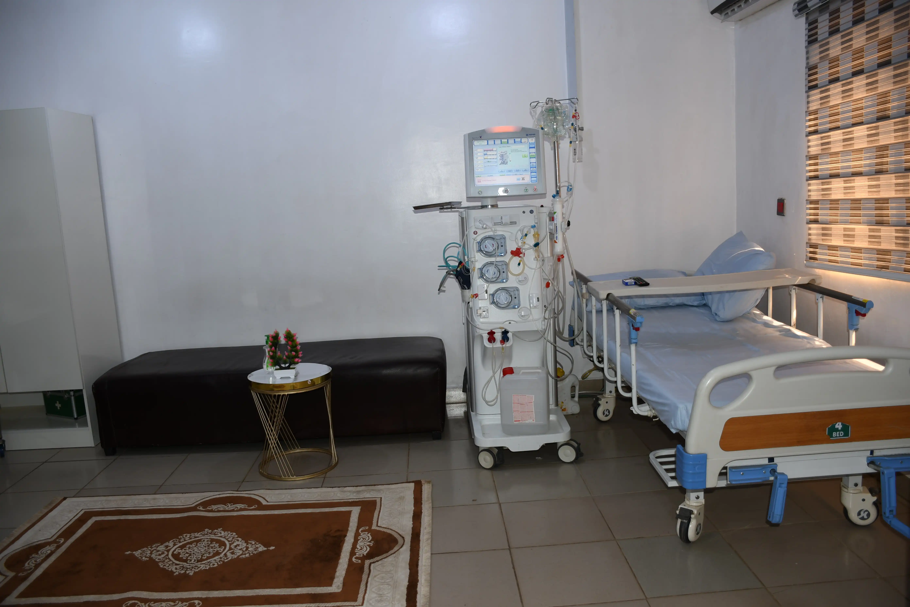

Dialysis Care & Patient Accommodation
At Heritage Kidney & Medical Care, we understand that dialysis is a continuous journey that requires comfort, consistency, and expert care. Our wards are designed to provide a supportive and healing environment tailored to each patient’s needs.

1. General Wards
Our General Wards are ideal for dialysis patients who require close monitoring in a shared and cost-effective setting.
- Affordable shared accommodation
- Continuous nursing supervision
- Easy access to dialysis units
- Clean and well-maintained environment

2. Private Wards
Our Private Wards provide a quiet and personal recovery space for dialysis patients.
- Single occupancy rooms
- Peaceful environment
- Dedicated nursing care
- Convenient dialysis access

3. VIP Wards
Our VIP Wards combine advanced medical care with premium comfort.
- Spacious furnished rooms
- Priority dialysis scheduling
- Personalized care
- Enhanced comfort
4. VVIP Wards
The VVIP Wards offer the highest level of luxury and personalized medical attention.
- Luxury suite-style accommodation
- Dedicated staff
- Maximum privacy
- Tailored care
5. Home Dialysis Services
We provide professional home dialysis support for patients with dialysis machines.
- Home visits by specialists
- Routine monitoring
- Machine guidance
- Emergency support